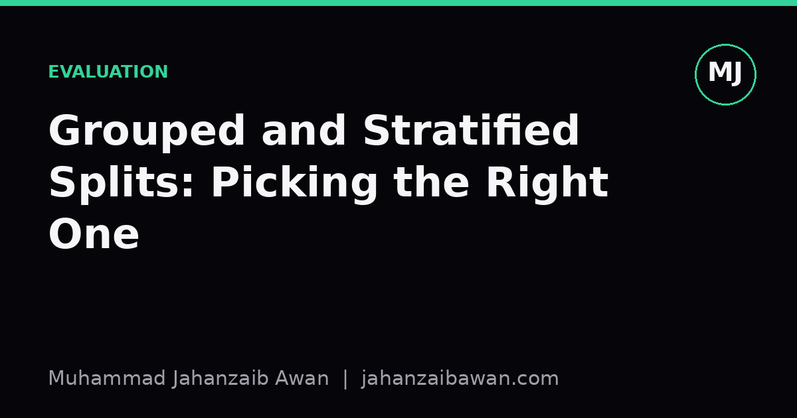

Grouped and Stratified Splits: Picking the Right One
Random splits are the default, but the structure of your data usually tells you which split strategy will actually protect you from fooling yourself.

Why the default split is rarely the right one
Most tutorials teach a random train-test split as if it were a neutral, risk-free operation. It is not. A random split only gives you an honest estimate of generalisation if the rows you are shuffling are genuinely independent and if the thing you care about getting right is represented proportionally in both halves. Real datasets rarely satisfy either condition quietly. There is usually some hidden structure, a patient who appears in multiple scans, a customer with dozens of transactions, a rare class that vanishes from the test set by bad luck, and that structure decides whether your validation score is trustworthy or decorative.
I think of this as a question you must ask before you ask anything about models: what is the unit that must not leak, and what is the unit that must be represented fairly? The first question points you towards grouped splits. The second points you towards stratified splits. Often the honest answer is that you need both, and ignoring either one produces a number that looks good in a notebook and falls apart in production.
Grouped splits: stopping the model from cheating on near-duplicates
A grouped split keeps every row belonging to the same entity entirely on one side of the split, either train or test, never both. The entity is whatever group identifier exists in your data: a patient ID, a device ID, a user ID, a document ID if you have chunked a document into passages. The reason this matters is that rows from the same group are usually correlated in ways that have nothing to do with the pattern you want the model to learn, and a model that exploits that correlation will look brilliant on a random split while learning almost nothing transferable.
Here is a concrete version. Suppose you have ten thousand sensor readings from fifty machines, roughly two hundred readings per machine, and you are predicting whether a machine will fail within the next week. If you split randomly, the test set will contain readings from machines that also appear in the training set, often taken only hours apart. The model can essentially memorise each machine's baseline signature and nudge its prediction from there, since nearby readings from the same machine are nearly identical. You might report ninety-four percent accuracy. Switch to a grouped split where all fifty machines are partitioned so that no machine appears in both sets, and the same model might drop to seventy-eight percent, because now it has to generalise to a machine it has never seen rather than recognise one it has.
That gap is not noise, it is the leakage you were previously hiding from yourself. The seventy-eight percent is the number that tells you something about deploying this model on machine fifty-one next month. The ninety-four percent tells you about a situation that will never recur, because in production every new machine is, by definition, a machine the model has not seen. Grouped k-fold cross-validation extends this idea across multiple folds, rotating which groups sit in the held-out fold each time, so you get a distribution of honest scores rather than a single lucky or unlucky one.
Stratified splits: keeping rare classes from disappearing
Stratification solves a different problem. It ensures that the proportion of each class, or each bucket of a continuous target, stays roughly the same in every fold. This matters most when a class is rare or when you care about a subgroup that makes up a small fraction of the data. Without stratification, a random split can, purely by chance, put almost all of the positive cases into one fold and leave the others nearly empty of them.
Take a fraud detection dataset where fraudulent transactions make up one and a half percent of all records. With five thousand transactions and plain random five-fold splitting, one fold might end up with eighteen fraud cases and another with only four, just from sampling variance. A model evaluated on the fold with four fraud cases will show a wildly different precision and recall than one evaluated on the fold with eighteen, and neither number reflects the model's real behaviour, they reflect the luck of the split. Stratified k-fold forces each fold to contain close to one and a half percent fraud cases, so the variance you observe across folds comes from the model and the data, not from an accidental imbalance in how you cut the pie.
The same logic applies beyond binary classification. If you are predicting a continuous value like house price, you can stratify by binning the target into deciles first, which prevents a fold from accidentally containing only mid-range houses while another contains only mansions. Stratification is cheap, it costs you nothing in model complexity, and it removes a whole category of evaluation noise that has nothing to do with the question you are trying to answer.
When you need both, and how to decide
The two concerns are orthogonal, which means many real datasets need a combined strategy: group by entity to prevent leakage, and within that grouping, try to preserve class balance across folds. This is harder than either technique alone, because moving whole groups between folds in large chunks makes it harder to hit an exact stratification ratio, especially with a highly imbalanced rare class. In practice you accept an approximate balance rather than a perfect one, and you check the realised class proportions per fold after the split rather than assuming the grouping has preserved them.
My rule of thumb is to start by asking whether any natural identifier in the data could let the model recognise an individual rather than learn a pattern; if so, group on it without exception, since leakage inflates scores far more dangerously than imbalance does. Then ask whether your target has a minority class or a skewed distribution worth protecting; if so, stratify within whatever grouping constraint you already have. If neither grouping nor a target requires special care, a well-seeded random split is fine, and reaching for complexity you do not need just adds a place for bugs to hide.
The practical habit worth keeping is to always report, alongside your main metric, a sentence describing exactly how the split was constructed: what the group key was, if any, and what was stratified, if anything. That single sentence is often the difference between a result someone can trust and a result someone has to quietly redo six months later when it fails to hold up outside the notebook.